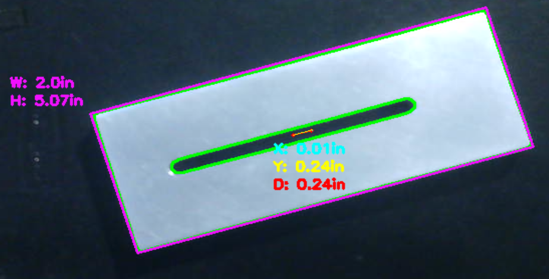
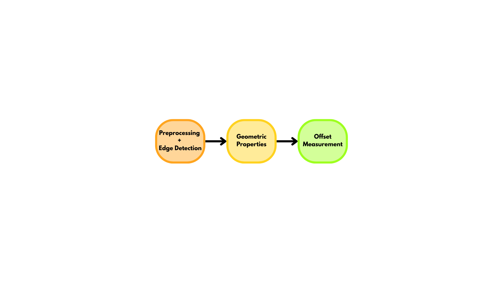
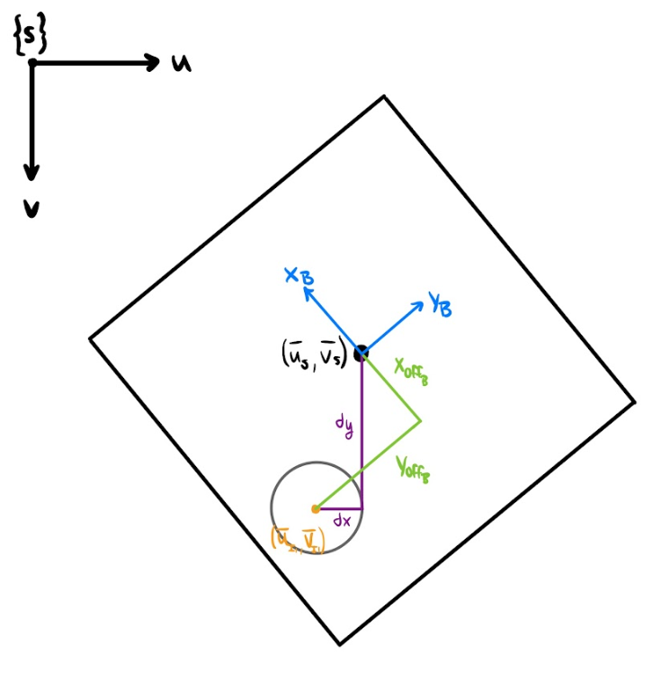
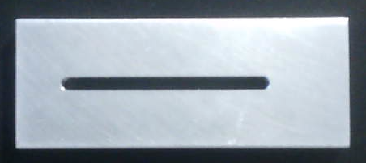
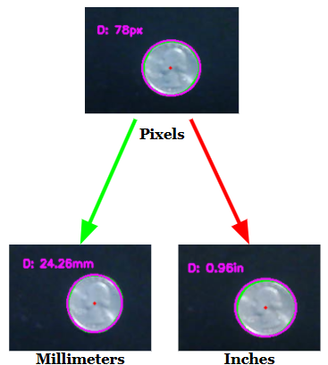
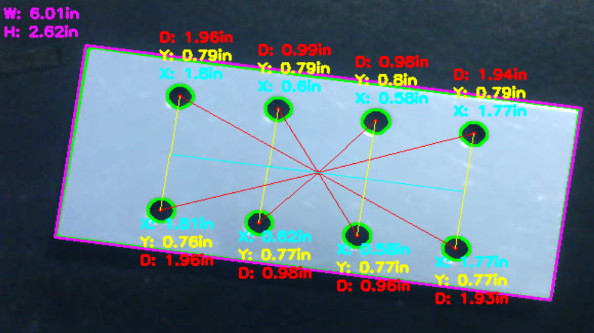

Building a real-time vision system to measure object geometry and internal-feature offsets, including rotationally invariant measurements from a webcam stream.
Status: Completed · Fall 2025 (EE 332)
This project develops computer-vision software for quickly measuring the geometric properties of an object and the offsets between its centroid and the centroids of internal features such as holes or engravings. The motivation is industrial inspection, where manual feature measurements can slow production changeovers and introduce human error.
The tool measures circular diameters or bounding-box widths and heights, identifies object and feature centroids, converts pixel measurements to physical units using a known reference object, and visualizes feature offsets in an intuitive output.

The implementation pipeline progresses from preprocessing and edge detection to geometric-property extraction and offset measurement.
Synthetic test images are deterministic, but live camera images introduce lighting variation, lens distortion, camera-pose misalignment, projection effects, noise, and object rotation. These effects make both edge detection and physical measurement less stable.
A particularly important challenge is rotation. Measuring centroid differences directly in the image frame makes the reported x- and y-offsets change when the same object is rotated. The system therefore needs to estimate the object's orientation and express offsets relative to the object's own coordinate frame.

Defining separate image and object coordinate frames makes it possible to transform feature offsets into a rotationally invariant representation.
The implementation was developed in two stages. Stage 1 established the pipeline on simple generated images. Images were contrast-equalized, Gaussian blurred, bilateral filtered, and processed with adaptive Canny thresholds derived using Otsu's method. A morphological closing operation then improved edge connectivity for contour extraction.

Real-image processing combines contrast enhancement, smoothing, Canny edge detection, and morphological closing.
Contours and their hierarchy are used to distinguish outer objects from internal features. Centroids are computed from image moments. Circularity determines whether a circular bounding region or rectangular bounding box is used, allowing diameter, width, and height measurements to be extracted.

A quarter with known diameter provides the pixel-to-inch or pixel-to-millimeter scaling factor.
Stage 2 adapts the pipeline to webcam input. CLAHE replaces global histogram equalization to improve local contrast, a known-size reference establishes physical units, and coordinate transformation is introduced so centroid offsets remain consistent as an object rotates.
Testing showed that the program could measure geometric properties and feature offsets across multiple objects, varying object sizes, and differing numbers of internal features. It correctly identified concentric features as having zero offset and could classify and measure circular reference objects.

The final implementation handles rotated objects and reports internal-feature offsets relative to the object frame.
The rotational-invariance extension produced offset measurements that remained consistent as objects were rotated. The main limitation was measurement stability in live video: lighting changes, reflective surfaces, camera alignment, and calibration could cause frame-to-frame variation. Proposed improvements include camera calibration, a controlled testbed and lighting, broader object testing, measurement stabilization with a Kalman filter, and automatic unit calibration.
The project implementation covers preprocessing, adaptive edge detection, contour hierarchy, centroid and geometric-property extraction, physical-unit calibration, offset measurement, and rotational invariance for live camera input.